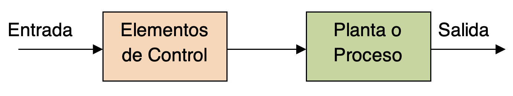
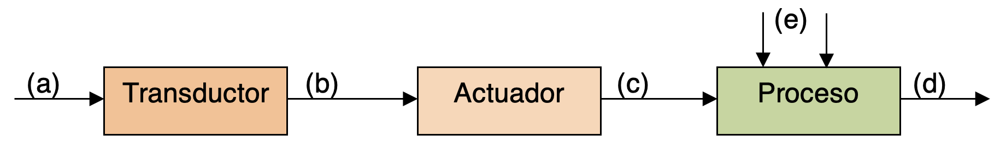
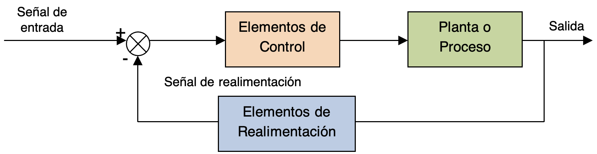
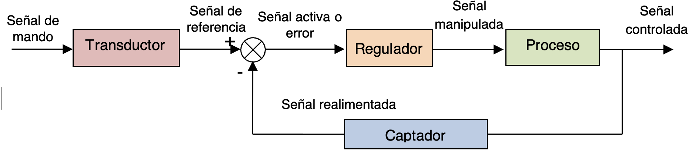

Sistemas en lazo abierto
Los sistemas de control en lazo (o bucle) abierto son aquellos en los que la señal de salida no tiene influencia sobre la señal de entrada.
Estos sistemas son muy sensibles a cualquier perturbación no prevista en su ajuste. En efecto, si algo perturba al sistema, alejando su salida del valor deseado, el sistema no puede darse cuenta (pues la salida no influye sobre la entrada).
Un sistema de control en lazo abierto tiene esta estructura simple:

Los elementos de control pueden diferir, pero una de las formas más comunes de controlar este tipo de sistemas es la que se representa a continuación:

El operador actúa sobre la señal de mando (a). Un componente del sistema de control denominado transductor se encarga de transformar esta señal de mando en una magnitud de salida apta para su manipulación, denominada señal de referencia (b). Esta señal de referencia, una vez amplificada por el actuador (c), actúa sobre el proceso para obtener la señal controlada (d). Ls flechas marcadas con (e) en la figura anterior representan las posibles perturbaciones que pueden aparecer en el sistema. Se verán con más detalle en la sección final de este apartado.
Como ejemplos de sistemas en bucle abierto tenemos una tostadora, una lavadora automática, un sistema de iluminación viaria (sin sensor crepuscular, sólo por tiempo), un sistema de calefacción sin termostato (por tiempo), etc.
Sistemas en lazo cerrado
Los sistemas de control en lazo cerrado se definen como aquellos en los que existe una realimentación de la señal de salida o, dicho de otra forma, aquellos en los que la señal de salida tiene efecto sobre la acción de control. El esquema básico de un sistema en lazo cerrado es como el que se indica a continuación:

Al hecho de comparar el valor de la salida del sistema con la referencia de entrada se le denomina realimentación (feedback). Así, los sistemas en bucle cerrado también se denominan sistemas realimentados. Otra forma de representar un sistema de control en bucle cerrado, con algo más de detalle, es la siguiente:

En general, se intentará que la salida del sistema (señal controlada) sea lo más parecida posible a la señal de referencia. Según la variación de esta señal de referencia con el tiempo, se pueden distinguir dos tipos de sistemas:
- Sistemas seguidores: la señal referencia cambia de valor frecuentemente. Ejemplo: servomecanismos (sistemas de control realimentado en el cual la salida es alguna posición, velocidad o aceleración mecánica), como el sistema de posicionamiento de los cañones de una batería de tiro antiaérea.
- Sistemas de regulación automática: la señal de referencia es o bien constante o bien varía lentamente con el tiempo, y la tarea fundamental consiste en mantener la salida en el valor deseado a pesar de las perturbaciones presentes. Ejemplos: el sistema de calefacción de una casa con sensor de temperatura, un regulador de voltaje, un regulador de presión de suministro de agua a una comunidad de vecinos.
Esta señal realimentada que proporciona el captador se compara con la señal de referencia para determinar cuál es la diferencia existente entre ambas. Esta operación se realiza mediante un comparador que proporciona a su salida la señal de error, que es la diferencia entre la salida y la referencia. Esta señal de error se denomina señal activa y es la que entra al regulador o controlador.
¿Por qué usar realimentación? Las perturbaciones
Los procesos reales están expuestos a cambios en las condiciones de su entorno, que pueden provocar variaciones en su salida. Por ejemplo, si nuestro sistema se usa para abastecer de agua una red determinada, y está funcionando al caudal que estimamos que se consume, un aumento inesperado de la demanda de agua resultará en que nuestro sistema estará dando un caudal equivocado y, lo que es peor, no tendrá forma de saberlo si no lo descubre un operario y cambia la señal de mando para aumentar el suministro. Estos cambios inesperados en las condiciones de funcionamiento de un sistema se conocen como perturbaciones externas al sistema.
También es posible que los propios parámetros del sistema varíen con el tiempo, por ejemplo, por piezas que se desgastan y sufren holguras, o juntas que pierden lubricación y aumentan su rozamiento, etc. Esto también hace que la salida del sistema para una misma señal de entrada sea ahora distinta a como se esperaba teóricamente. Estas variaciones se denominan perturbaciones internas del sistema.
Es fácil comprobar que, si en un sistema en bucle abierto aparecen perturbaciones, la salida dejará de ser la deseada sin que el sistema pueda detectarlo. Este es el principal inconveniente de estos sistemas de control. Sin embargo, su ventaja esencial es que son los sistemas de control más simples y económicos que existen, por lo que tienen muchas aplicaciones.
La ventaja principal del control en lazo cerrado frente al control en lazo abierto es que la respuesta del sistema se hace relativamente insensible a perturbaciones externas y a variaciones de los parámetros del sistema (perturbaciones internas). Se puede detectar a tiempo que la salida del sistema está variando y realizar las modificaciones necesarias a la entrada para que el sistema se comporte correctamente y la salida se corrija.